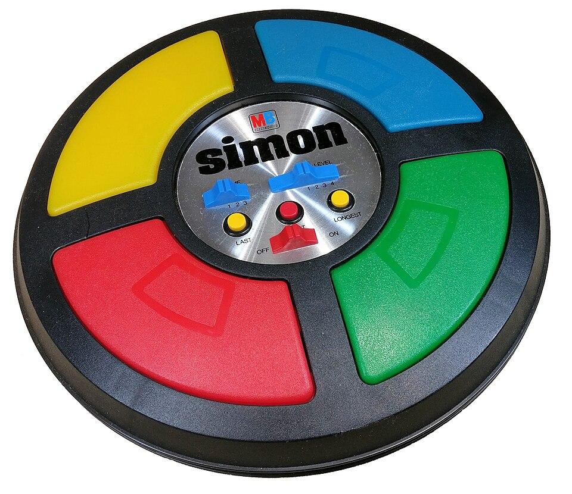

Milton Bradley Simon
A Texas Instruments TMS1000 microcontroller, four mechanical lighted push-buttons, and an A-major triad — the closed-loop microcontroller-mediated memory game that defined a genre

Overview
Simon (1978) is the iconic audio-visual memory game with four large lighted touch panels arranged in a circular disc. It was invented by Ralph H. Baer and Howard J. Morrison at Marvin Glass and Associates in Chicago, with software by Lenny Cope and much of the assembly code by Charles Kapps (a Temple University computer-science instructor). Baer built the prototype (then called 'Follow Me') after seeing Atari's Touch Me arcade game (1974, a commercial flop) at the Music Operators of America (MOA) trade show in 1976; Marvin Glass and Associates developed the prototype and sold it to Milton Bradley, who renamed it Simon. US Patent 4,207,087A ('Microcomputer controlled game apparatus,' Baer & Morrison, filed September 19, 1977, granted June 10, 1980) is the primary technical source.
The game is built around a Texas Instruments TMS1000 4-bit single-chip microcontroller — explicitly named in the patent text: 'A TMS1000 single chip microprocessor manufactured by Texas Instruments, Inc. is suitable for use as the microprocessor 52.' This is one of the earliest consumer applications of a microcontroller. The MCU scans four mechanical push-button keyswitches (the colored translucent panels) by sequentially energizing outputs R0–R10 while sampling inputs K1, K2, K4, K8; each keyswitch has an incandescent bulb behind it that illuminates the translucent panel, and a small loudspeaker driven by a transistor produces a tone. The tones form an A major triad in second inversion (resembling a bugle fanfare) — E4 (blue, lower right), C♯5 (yellow, lower left), A4 (red, upper right), E5 (green, upper left, an octave above blue) — so any sequence is always harmonic regardless of order. Some 1978 models used an alternate B♭ minor triad (B♭, D♭, F, B♭). The clock/timing is internal to the MCU controlled by an RC timing circuit (capacitor 68 + resistor 70); power-on reset via capacitor 64 + diode 66. Power: 9V battery.
The patent describes five games, not just one: Game 1 (solo vs. machine, ever-lengthening); Game 2 (two-player alternating); Game 3 (timed-response variant); Game 4 (record/playback of rhythm/tunes — 'bugle calls'); Game 5 (multi-player elimination — wrong player's tone is removed and their panel blinks). The failure mode is a distinctive error tone (not a generic buzz); the win signal is a second distinctive 'win' tone when the sequence reaches the target length (selectable: 8, 14, or 20 tones on the original). The speed-up curve is described in patent claim 1: 'means responsive to the length of said time sequence for increasing said predetermined time rate when the length of said sequence exceeds a predetermined length' — the playback rate steps up automatically once the sequence crosses a threshold length. Launched at Studio 54 in New York City in 1978 at $24.95, with ~1 million units sold in the first year (top-selling toy of the 1978 Christmas season with reported shortages). Still in production today by Hasbro with dozens of variants (Super Simon 1979, Pocket Simon 1980, Simon Squared 2000, Simon Stix 2004, Simon Trickster 2005, Simon Flash 2011, Simon Swipe 2013, Simon Air 2016, Simon Optix 2017, etc.).
Deep dive
Ralph H. Baer — already represented in the museum via Coleco Telstar Arcade (1977, his earlier work at Sanders Associates) — built the Simon prototype (then called 'Follow Me') after seeing Atari's Touch Me arcade game (1974, a commercial flop) at the Music Operators of America (MOA) trade show in 1976. Where Touch Me's arcade cabinet used four large same-color black buttons and 'harsh, grating' sounds (Baer's words), Baer's vision was a more pleasant, consumer-grade version with colored lighted panels and harmonic tones. Howard J. Morrison (1932 – January 21, 2025) was his co-inventor at Marvin Glass and Associates, the Chicago toy design firm that developed the prototype and sold it to Milton Bradley. Morrison later co-founded Breslow, Morrison, Terzian & Associates (BMT, now Big Monster Toys) and was inducted into the Toy Industry Association Hall of Fame in 1998. Software was by Lenny Cope (Baer's partner); much of the assembly code by Charles Kapps (Temple University computer-science instructor, author of one of the first programming-theory textbooks). The patent (US 4,207,087A) was filed September 19, 1977 and granted June 10, 1980; the original assignee is Marvin Glass and Associates. Milton Bradley (now Hasbro, which acquired Milton Bradley in 1984) is the publisher/manufacturer.
The Texas Instruments TMS1000 4-bit single-chip microcontroller is explicitly named in the patent text. The MCU is mask-programmed (the firmware is permanently etched into the chip during manufacture). The four colored translucent quadrant panels (red, green, blue, yellow) actuate mechanical push-button keyswitches — NOT capacitive, NOT resistive. The patent text explicitly and repeatedly calls them 'four push-button keyswitches 14, 16, 18 and 20'; teardowns confirm mechanical leaf/contact switches. Each panel has an incandescent bulb behind it (patent: 'indicator lights are located under the respective keyswitches and serve to illuminate the keyswitches') — NOT LEDs. A small loudspeaker (≈2¼-inch, 8 Ω) is driven by a driver transistor. Additional controls: three pushbutton switches (last-game recall, longest-sequence recall, start/new game), a slide switch for game select, and a switch for sequence-length target. Power: 9V battery; some early units also accepted an AC adapter. The MCU scans the switches by sequentially energizing outputs R0–R10 while sampling inputs K1, K2, K4, K8.
Simon is the museum's cleanest example of a closed-loop microcontroller-mediated human-machine interaction: machine → stimulus (light + tone) → human perception → human motor response → machine evaluation → adaptive next stimulus. The microcontroller generates a random sequence of tone + light events; the player must repeat by pressing the matching panels; correct repetition causes the machine to append one new event and replay the lengthened sequence, with the loop continuing until error or target length reached. The speed-up curve is described in patent claim 1 — the playback rate steps up automatically once the sequence crosses a threshold length, making the game progressively harder. Five game variants are described in the patent (solo, two-player, timed, record/playback, multi-player elimination). Failure produces a distinctive error tone (not a generic buzz); success produces a distinctive 'win' tone when the target length is reached (selectable: 8, 14, or 20 tones on the original). The tones form an A major triad in second inversion (resembling a bugle fanfare, per Baer's inspiration) — always harmonic regardless of sequence order. Some 1978 models used an alternate B♭ minor triad.
Simon is a closed-loop microcontroller-mediated interaction in purest form: a TMS1000 generates a stochastic audio-visual stimulus sequence, the human perceives it, responds via mechanical touch panels, and the machine evaluates the response and adaptively lengthens/accelerates the next stimulus — a real-time, embodied, single-chip cybernetic loop with no screen, no keyboard, and no linguistic content. It is one of the earliest consumer products to put a microcontroller in unskilled hands for a non-trivial human-machine skill contest, and its industrial design (circular disc, four colored quadrants, harmonic triad tones) is iconic enough to have spawned an entire genre (Merlin, Copy Cat, Einstein, Genius, Bop It, etc.) that persists to this day. The Baer connection ties Simon to the museum's existing Coleco Telstar Arcade entry, giving a coherent Ralph-Baer thread: Coleco Telstar Arcade (1977, the form-factor-as-controller console) and Simon (1978, the closed-loop MCU memory game).
Atari's Touch Me arcade game (1974) predates Simon by ~4 years. It was a commercial flop — four large same-color black buttons and 'harsh, grating' sounds (Baer's words); it couldn't compete with pinball and video games in arcades. The brief's claim that the arcade used an Intel 8080 is unverified; the arcade likely used discrete TTL logic. The Atari Touch Me handheld (1978) was released after Simon's success as a me-too product — multicolored buttons, pleasant tones, mirrored Simon's button layout (upside-down), added an LED score display, smaller than Simon. Contained Simon's three game variations and four difficulty levels (limits 8/16/32/99 vs. Simon's 8/14/20/31). The museum promotes Simon, not Touch Me: (1) Simon (1978) falls squarely in the museum's 1976–1992 window; the canonical Touch Me arcade (1974) falls outside it. (2) Simon is the patent-protected, commercially massive, design-iconic, microcontroller-driven consumer artifact; Touch Me arcade was a commercial failure with monochrome buttons and harsh sound. (3) Simon's TMS1000 is a documented, primary-source-confirmed early consumer microcontroller; Touch Me's CPU is unverified. (4) The Baer connection ties Simon to the museum's existing Coleco Telstar Arcade entry.
Team & pioneers
- Ralph H. Baer. Co-inventor. Already in the museum via Coleco Telstar Arcade (his earlier work at Sanders Associates). Built the Simon prototype (called 'Follow Me') after seeing Atari's Touch Me arcade game in 1976.
- Howard J. Morrison. Co-inventor (1932 – Jan 21, 2025). American game designer at Marvin Glass & Associates; later co-founded Breslow, Morrison, Terzian & Associates (BMT, now Big Monster Toys). Inducted into Toy Industry Association Hall of Fame in 1998.
- Marvin Glass and Associates. Chicago toy design firm; original patent assignee (US 4,207,087A). Developed the prototype and sold it to Milton Bradley.
- Lenny Cope. Baer's partner; core programming on the prototype.
- Charles Kapps. Temple University computer-science instructor, author of one of the first programming-theory textbooks; wrote much of the assembly code.
- Milton Bradley Company. Publisher/manufacturer. Acquired by Hasbro in 1984; Hasbro continues to manufacture Simon and variants today.
- Texas Instruments TMS1000. 4-bit single-chip microcontroller, mask-programmed. One of the earliest consumer applications of a microcontroller, explicitly named in the patent text.
Media
Sources
- Wikipedia: Simon (game)
- Wikipedia: Touch Me (arcade game) — 1974 predecessor
- Wikipedia: Howard J. Morrison
- US Patent 4,207,087A: 'Microcomputer controlled game apparatus' (Baer & Morrison, 1980) — Google Patents
- US Patent 4,207,087 full PDF (USPTO, public domain)
- Wikimedia Commons: Simon_Electronic_Game.jpg (CC0 hero photo by Shritwod)
- Wikimedia Commons: Category:Simon (game)
- Benj Edwards: 'Simon Turns 30' (1up.com, archived)
- Smithsonian NMAH: Simon (1978) object record
- Hasbro: current Simon product page